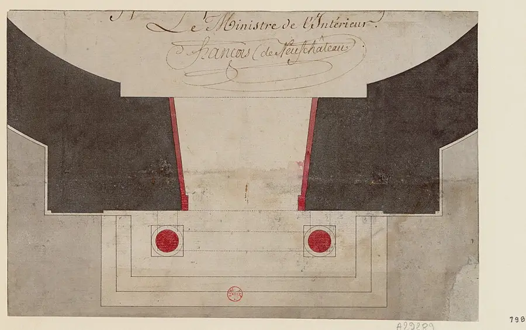
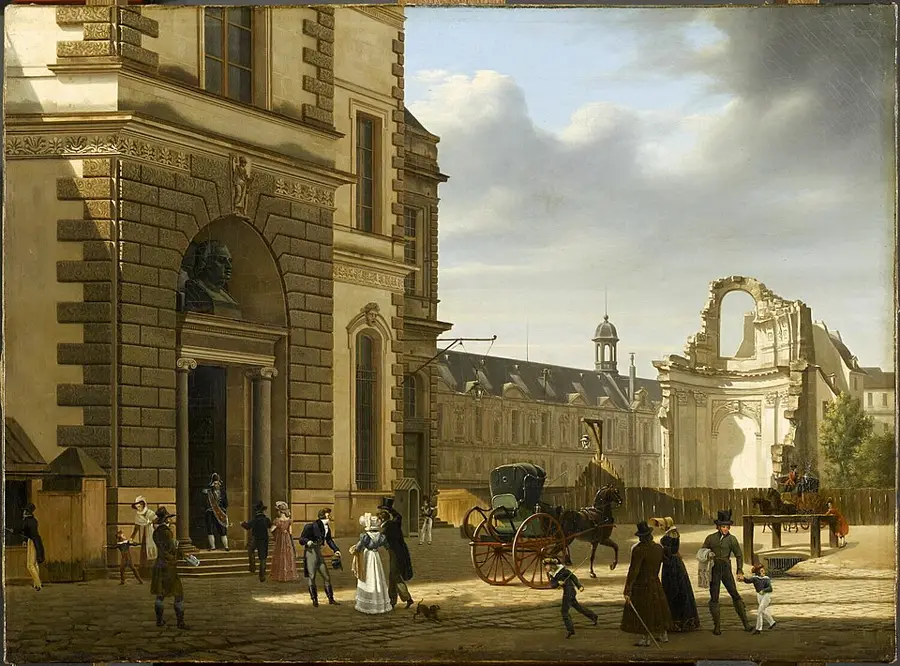
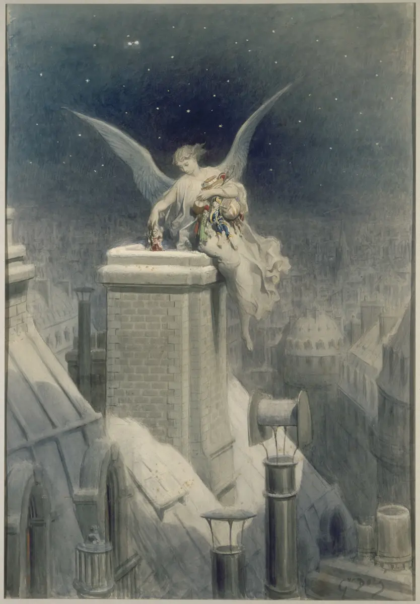
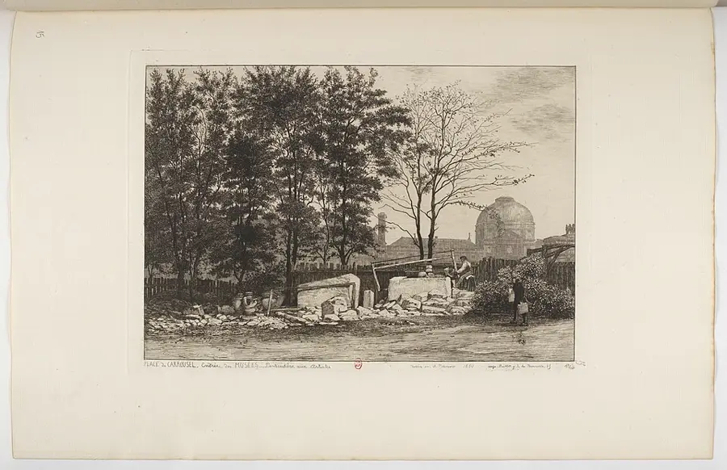
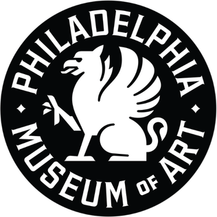

대표 로고대표 브랜드 마크
대표 로고대표 브랜드 마크루브르 박물관 Louvre Museum
루브르 박물관(Louvre Museum)은 프랑스 파리의 중심가에 있는 국립 박물관이다. 소장품의 수와 질 면에서 세계적으로 손꼽히는 박물관이다.
최종 업데이트
루브르 박물관은 어떤 브랜드인가
루브르 박물관은 현재 루브르 궁전을 개조한 건물에 자리하고 있으며, 이 건물은 세계유산으로 지정되어 있다. 박물관 앞의 유리 피라미드는 근대에 건설되었으나 현재는 루브르를 대표하는 조형물이 되었다.
소장품 규모는 2019년 기준으로 총 615,797점에 달하며, 이들 중 8개 전시관에 35,000점이 공개된다. 2021년 3월부터는 온라인 소장품 검색 서비스를 통해 482,943점의 소장품을 검색할 수 있다.
이 박물관은 이집트 고대유물관, 근동 유물관, 그리스와 에트루리아, 로마 유물관, 이슬람 미술관 등 8개의 전시관을 운영한다.
루브르 박물관은 어떻게 시작되고 성장했나
루브르 박물관의 현재 건물은 12세기 후반 요새로 착공되었던 루브르 궁전에서 유래한다. 1682년 루이 14세가 루브르를 왕실 수집품 전시 장소로 사용하도록 결정했다.
1692년에는 금석문·문예 아카데미와 왕립 회화 조각 아카데미가 들어섰으며 1699년 첫 번째 살롱전이 개최되었다. 프랑스 대혁명 당시 국민회의는 루브르가 국가의 걸작을 전시하는 박물관이 되어야 한다고 선포했다.
박물관으로서 루브르는 1793년 8월 10일에 537점의 회화를 전시하며 문을 열었다. 나폴레옹 통치 시기에 소장품 규모가 크게 늘었으며 이름이 바뀌기도 했다.
루브르 박물관의 브랜드 아이덴티티는 무엇인가
루브르 박물관은 유구한 역사와 광범위한 고대 문명 유물 컬렉션을 통해 인류 역사의 걸작들을 보존하고 전시하는 세계적인 박물관이다. 파리의 중심에서 궁전을 개조한 독특한 건축물과 유리 피라미드가 상징적인 특징이다.
루브르 박물관의 대표 제품과 서비스는 무엇인가
루브르 박물관은 이집트 고대유물관, 중동 유물관, 그리스와 에트루리아, 로마 유물관, 이슬람 미술관 등 8개의 전시관을 운영한다. 이집트 고미술품관은 기원전 4000년경부터 기원후 4세기까지 나일강 일대 문명의 유물 약 50,000여 점을 소장하며 파피루스, 미라, 도구 등 실생활품을 포함한다.
중동 고미술품관은 인류 정착지부터 이슬람교 전파 이전까지 고대 중동 문명을 다루며, 함무라비 법전 등 중요한 유물을 소장한다. 그리스·에트루리아·로마관은 신석기 시대부터 6세기까지 지중해 문명의 미술품을 전시하고 《밀로의 비너스》와 《사모트라케의 니케》 등 대표작을 소장한다.
이슬람 미술관은 도자기, 유리, 카펫 등 약 5,000여점의 작품을 전시한다.
루브르 박물관은 지금 어떤 상태인가
2019년 기준으로 루브르 박물관의 소장품 규모는 총 615,797점에 달한다. 이 중 35,000점이 8개 전시관에 공개 전시되고 있다.
2021년 3월 24일부터는 온라인 소장품 검색 서비스가 시작되어, 482,943점에 달하는 소장품을 온라인으로 검색할 수 있다.
루브르 박물관 로고는 어떻게 변해왔나
대표 로고대표 브랜드 마크사진으로 보는 루브르 박물관의 역사




자주 묻는 질문
루브르 박물관는 어느 나라 브랜드인가요?
루브르 박물관는 프랑스의 미디어·엔터테인먼트 브랜드입니다.
루브르 박물관의 브랜드 아이덴티티는 무엇인가요?
루브르 박물관은 유구한 역사와 광범위한 고대 문명 유물 컬렉션을 통해 인류 역사의 걸작들을 보존하고 전시하는 세계적인 박물관이다.
루브르 박물관의 대표 제품은 무엇인가요?
루브르 박물관은 이집트 고대유물관, 중동 유물관, 그리스와 에트루리아, 로마 유물관, 이슬람 미술관 등 8개의 전시관을 운영한다.
루브르 박물관는 현재 어떤 상태인가요?
2019년 기준으로 루브르 박물관의 소장품 규모는 총 615,797점에 달한다.
루브르 박물관의 창업자는 누구인가요?
루브르 박물관의 창업자는 나폴레옹 보나파르트입니다(위키데이터 기준).
루브르 박물관의 공식 웹사이트는 어디인가요?
루브르 박물관의 공식 웹사이트는 https://www.louvre.fr/ 입니다.
출처와 검증
루브르 박물관 관련 참고: 공식 웹사이트 · 위키데이터 Q19675 · 한국어 위키백과 · 영어 위키백과. 브랜드명은 한글과 원어를 함께 표기하되 데이터에 없는 표기는 만들지 않습니다. 기원 국가·설립연도는 검수된 정의문에서 확인된 값을 우선하고, 없을 때만 공식 웹사이트 URL이 일치하는 위키데이터 개체의 값을 씁니다. 탄생일의 월·일은 위키데이터, 위키백과 정보상자, 본문 가운데 같은 연월로 확인되는 값만 싣고, 출처끼리 다르면 싣지 않습니다. 웹 첫 보관은 인터넷 아카이브가 공식 사이트 첫 화면을 처음 보관한 날로, 사이트 개설일과 다를 수 있습니다. 위키데이터 값은 2026-09-12 기준입니다.
8월에 태어난 브랜드
함께 읽을 브랜드

필라델피아 미술관Philadelphia Art Museum미디어·엔터테인먼트 로열 온타리오 박물관Royal Ontario Museum (ROM)미디어·엔터테인먼트몬트리올 미술관Musée des beaux-arts de Montréal미디어·엔터테인먼트
로열 온타리오 박물관Royal Ontario Museum (ROM)미디어·엔터테인먼트몬트리올 미술관Musée des beaux-arts de Montréal미디어·엔터테인먼트 워너 브라더스Warner Bros. Entertainment미디어·엔터테인먼트
워너 브라더스Warner Bros. Entertainment미디어·엔터테인먼트 오르세 미술관Musée d'Orsay미디어·엔터테인먼트
오르세 미술관Musée d'Orsay미디어·엔터테인먼트 대영박물관British Museum미디어·엔터테인먼트
대영박물관British Museum미디어·엔터테인먼트 에르미타시 박물관Hermitage Museum미디어·엔터테인먼트
에르미타시 박물관Hermitage Museum미디어·엔터테인먼트 세가Sega미디어·엔터테인먼트
세가Sega미디어·엔터테인먼트